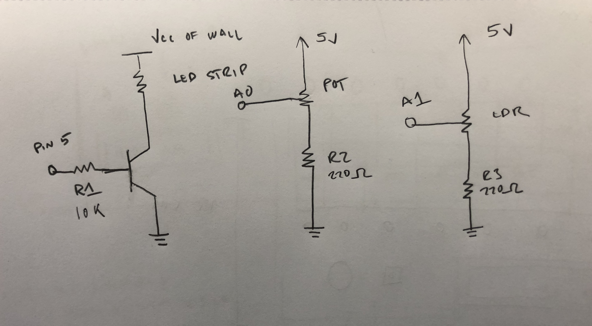
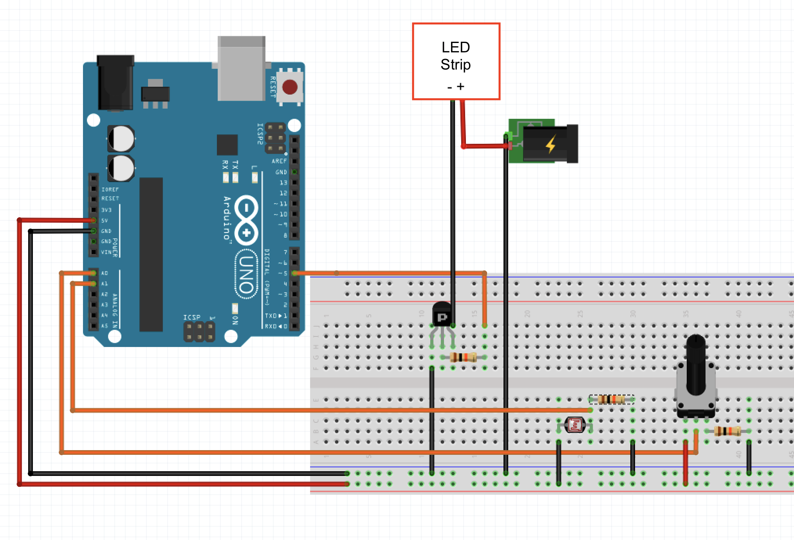
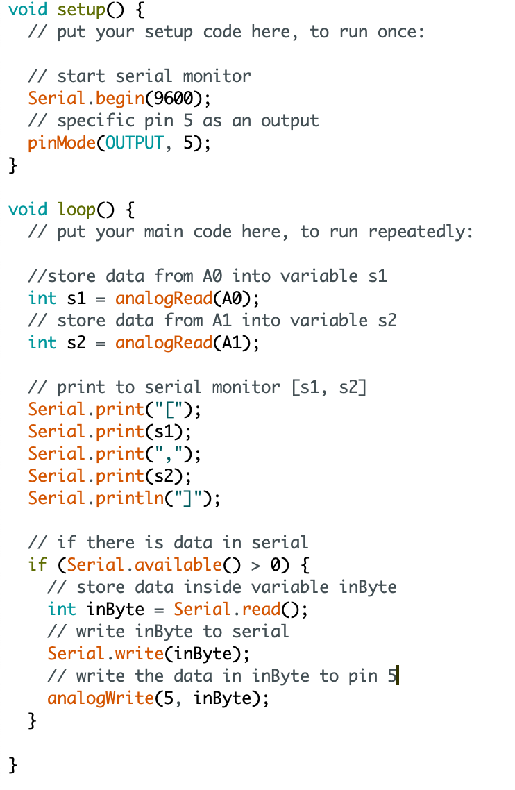
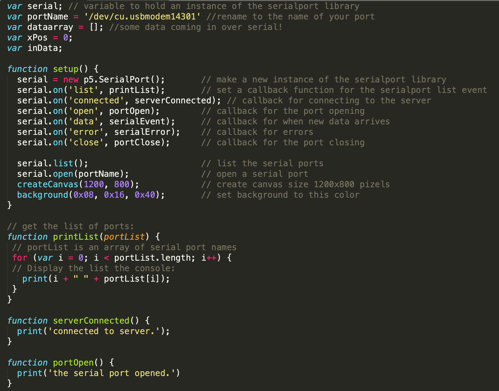
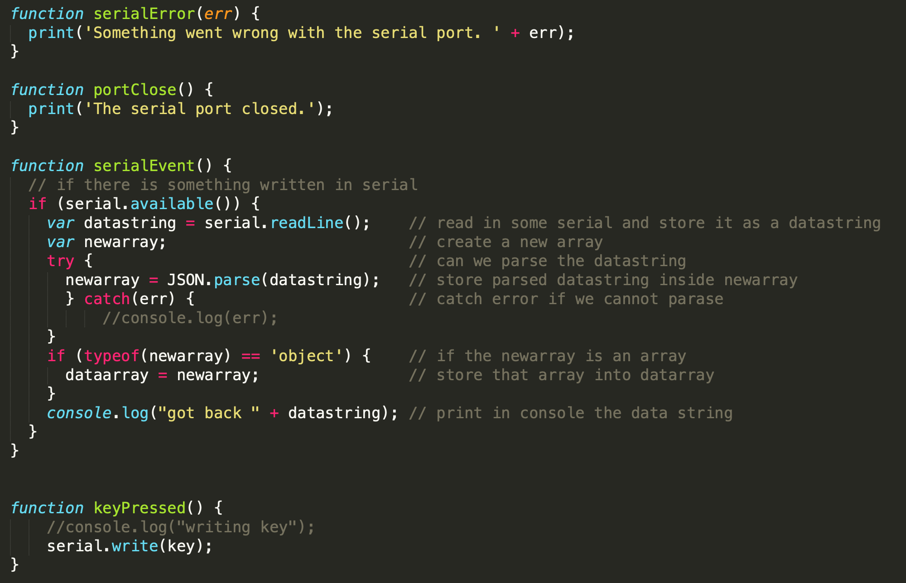
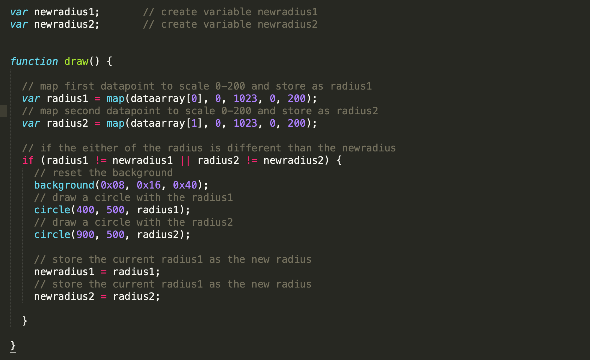

Monina's Assignment 7!
A picture of the schema.
Since the LDR and potentiemter are variable resistors, we need a second resistor to prevent current flowing dirrectly from power to ground. 220 Ohm resistors are enough resistant to stop this.

An image of the circuit.

A gif of the circuits operation. The circles on the webpage change in size based on the input from the sensors. The brightness of the LED strip changes based on input from the keyboard.

The code snippet for the Arduino board.
  
The code snippet for the p5.js.